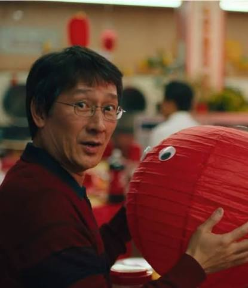

Waymond Wang is the husband of Evelyn Wang in the film "Everything Everywhere All At Once," who run a small laundromat together. He is a kind, gentle, and optimistic character who often serves as a source of support and encouragement for Evelyn. While he seems meek and naive, Waymond uses his optimism, empathy, and belief in kindness as sources of strength. What many see as a weakness is actually a deliberate choice that allows him to navigate life's challenges without being bogged down by them.